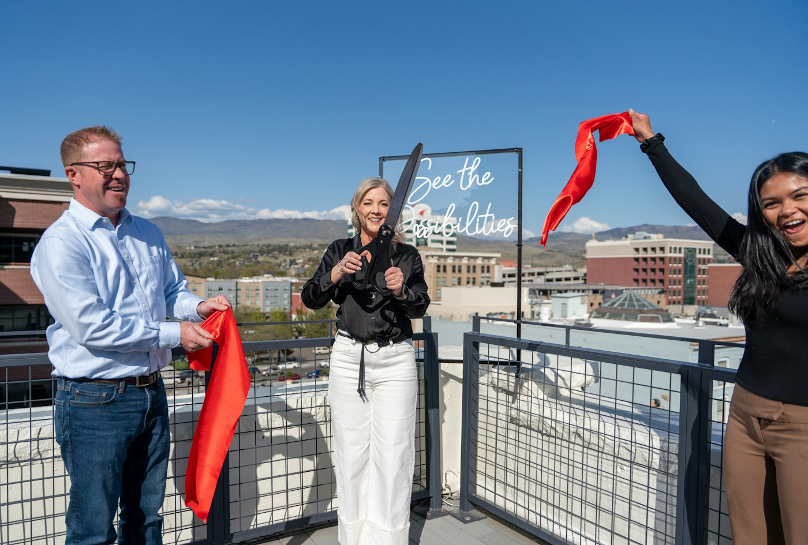
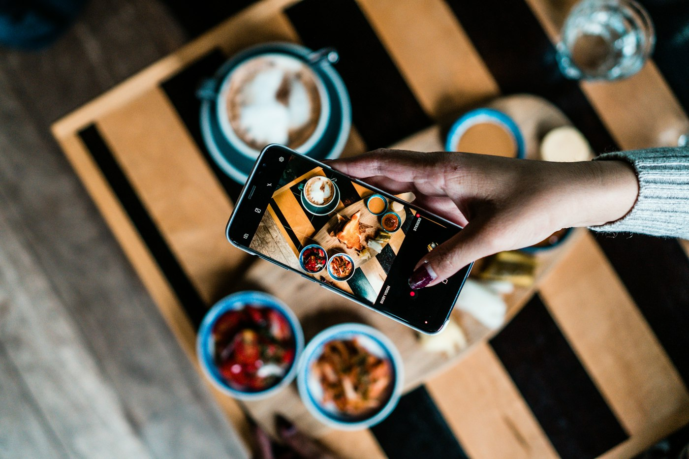

Transformations
Nouvelle carte, nouvelle organisation, nouvelle identité visuelle : on accompagne la transformation complète d'un restaurant, du diagnostic jusqu'aux premiers résultats concrets sur le terrain.

Inaugurations
Communication, mise en scène du jour J, premiers retours clients : on structure le lancement d'un nouvel établissement pour qu'il marque les esprits dès l'ouverture.

Vidéos UGC
Du contenu brut et sincère tourné sur le terrain — cuisine, équipe, ambiance en salle — pensé pour les réseaux sociaux. Le format UGC génère en général plus de portée qu'un rendu trop léché, pour une fraction du prix d'un tournage professionnel.
Analyses
Food cost, marge, trafic, masse salariale : un diagnostic complet de l'activité pour transformer un ressenti flou en plan d'action chiffré. C'est le point de départ de tout accompagnement RestUp.